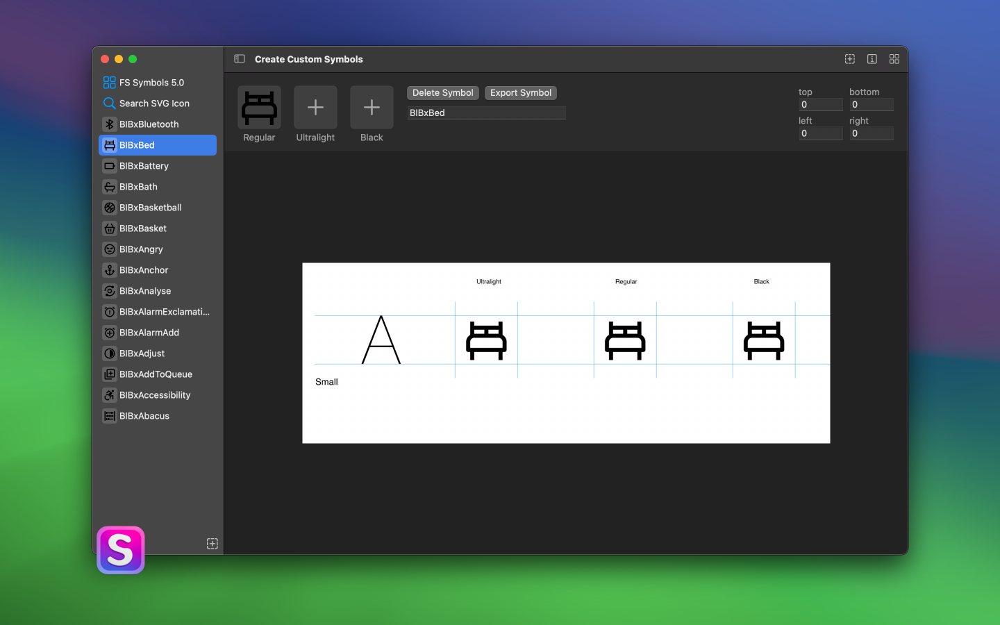
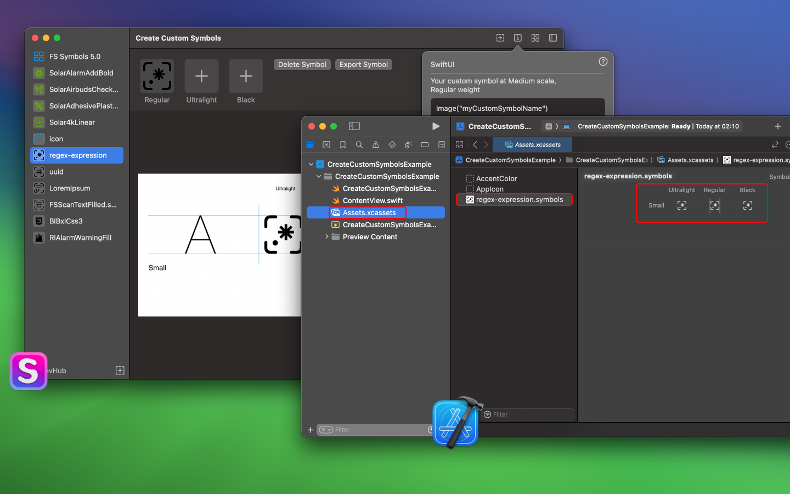
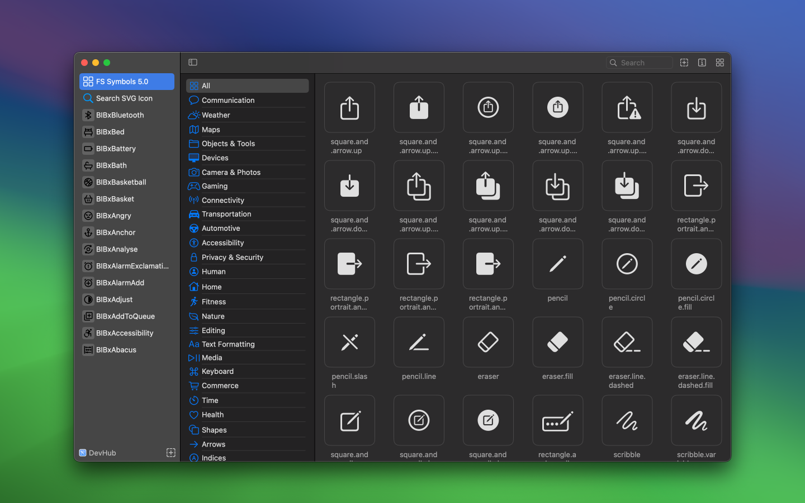
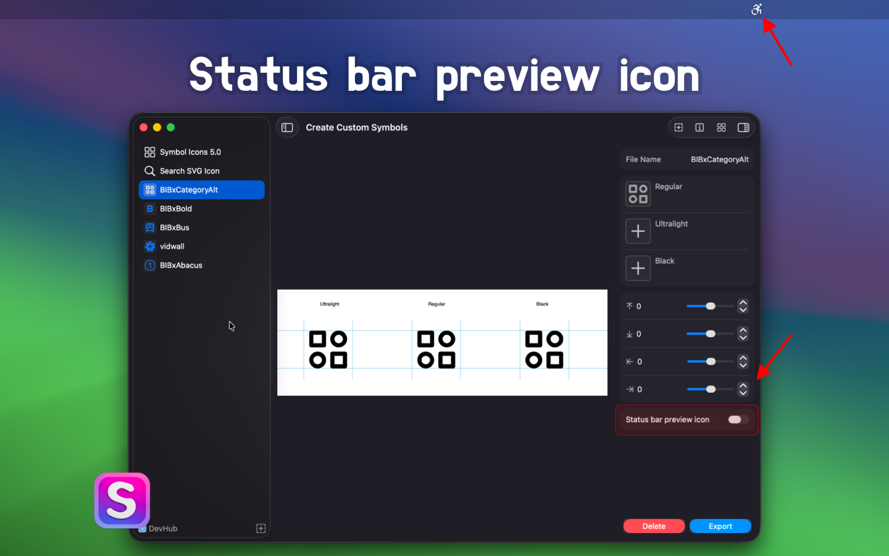
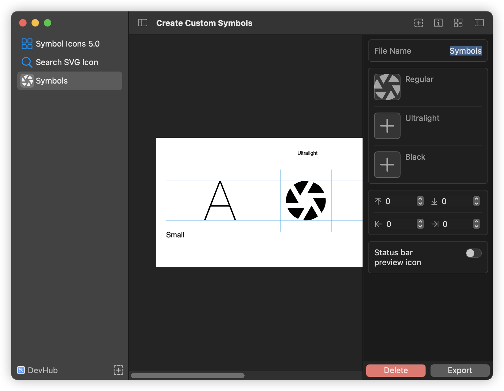
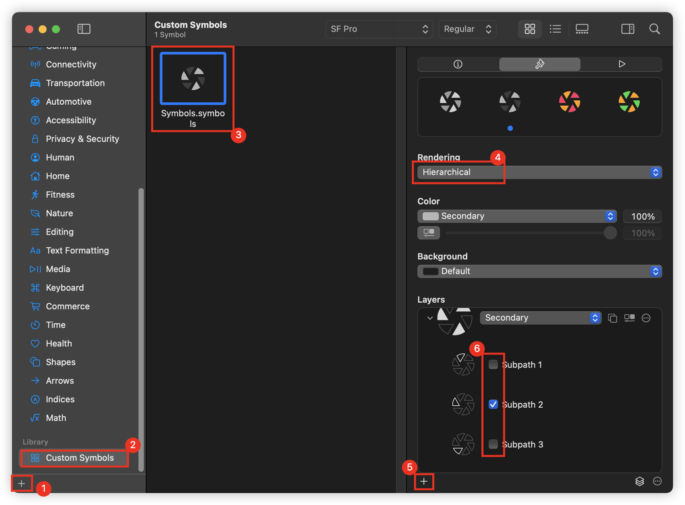
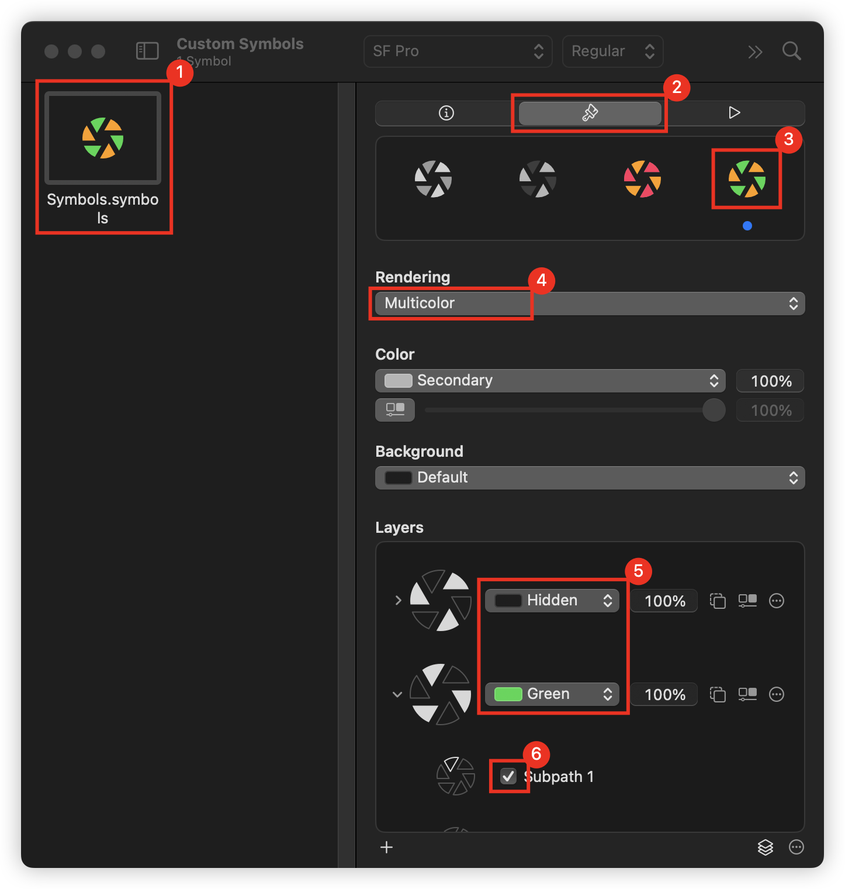
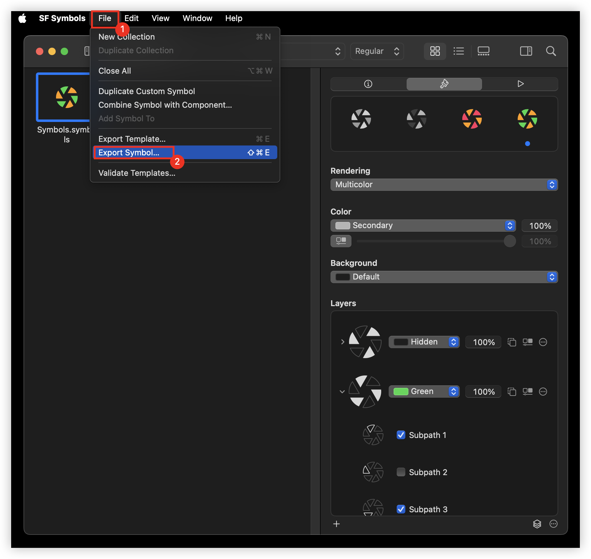

一个工具，能够将任意 SVG 图标转换为自定义的 SF 符号。您可以将定制的 SF 符号导入 Xcode，并在任何基于 UIKit 或 SwiftUI 的项目中使用。

通过拖放，将任何 SVG 图标轻松转换为可在 Xcode 中使用的 SF 符号文件，快速创建 SF 符号文件。

支持批量导入 SVG 图标，并批量生成 SF 符号图标


常见问题
如何在 SwiftUI 中使用您的自定义 SF 符号？
// Your custom symbol at Medium scale, Regular weight
Image("myCustomSymbolName")
// Your custom symbol at large scale, 21pt font and Heavy weight
Image("myCustomSymbolName")
.imageScale(.large)
.font(Font.system(size: 21, weight: .heavy))
您还可以在一些文本旁边显示自定义符号。
VStack {
(Text("Some Text ")
+ Text(Image("myCustomSymbolName"))
+ Text(" more text")).imageScale(.large)
}
如何在 UIKit 中使用您的自定义 SF 符号？
let customSymbol:UIImage? = UIImage(named: "MyCustomSymbolName")?
.applyingSymbolConfiguration(
UIImage.SymbolConfiguration(
pointSize: 17,
weight: .semibold,
scale: .large
)
)
如何在 AppKit 中使用您的自定义 SF 符号？
let customSymbol:NSImage? = NSImage(named: "MyCustomSymbolName")?
.withSymbolConfiguration(
NSImage.SymbolConfiguration(
pointSize: 24,
weight: .bold,
scale: .large
)
)
为符号图像应用特定外观
var configuration = NSImage.SymbolConfiguration(
paletteColors: [.systemTeal, .systemGray]
)
configuration = config.applying(.init(textStyle: .title1))
imageView.symbolConfiguration = config
如何在 UIKit 中使用您的自定义 SF 符号？
// Create a system symbol image.
let image = UIImage(systemName: "multiply.circle.fill")
// Create a custom symbol image using an asset in an asset catalog in Xcode.
let image = UIImage(named: "custom.multiply.circle")
如何将自定义 SF 符号添加到字符串中？
Text("使用 \(Image("myCustomSymbolName")) 裁剪图像")
如何定义多彩 SF 符号？
目前暂时不支持，根据官方文档手动去添加样式，仍然在未来尝试支持它
<style>
.multicolor-0:systemBlueColor { fill:#007AFF; opacity:1.0 }
.multicolor-1:white { fill:#FFFFFF; opacity:1.0 }
.multicolor-2:tintColor { fill:#007AFF; opacity:1.0 }
.hierarchical-0:tertiary { fill:#8E8E8E }
.hierarchical-1:primary { fill:#212121 }
</style>
<g id="Symbols">
<!-- 包含三种形状的变体，具有多色和分层注释。 -->
<g id="Regular-M" transform="matrix(1 0 0 1 2853.78 1556)">
<!-- 形状位于第一个多色图层中，其填充颜色为 systemBlueColor。
它也位于分层渲染的第一个图层中，层级为一级。-->
<path
class="multicolor-0:systemBlueColor hierarchical-1:primary" d="..."
/>
<!-- 两个额外的形状。 -->
<path class="multicolor-1:white hierarchical-1:primary" d="...">
<path class="multicolor-2:tintColor hierarchical-0:tertiary" d="...">
</g>
</g>
如何为自定义符号启用多色支持？
感谢 @ldowens 提供的方法，帮助我们实现自定义符号的多色支持。
步骤 1：创建并导出符号
在 Create Custom Symbols 应用中，使用 SVG 创建一个新的符号，并将其导出。

步骤 2：导入 SF Symbols 并设置颜色
将导出的 Symbols.symbols.svg 文件拖拽到 SF Symbols 应用中，并创建层。

按照以下步骤设置自定义符号的颜色：

步骤 3：导出多色符号
完成颜色设置后，在 SF Symbols 应用中导出符号图标。
